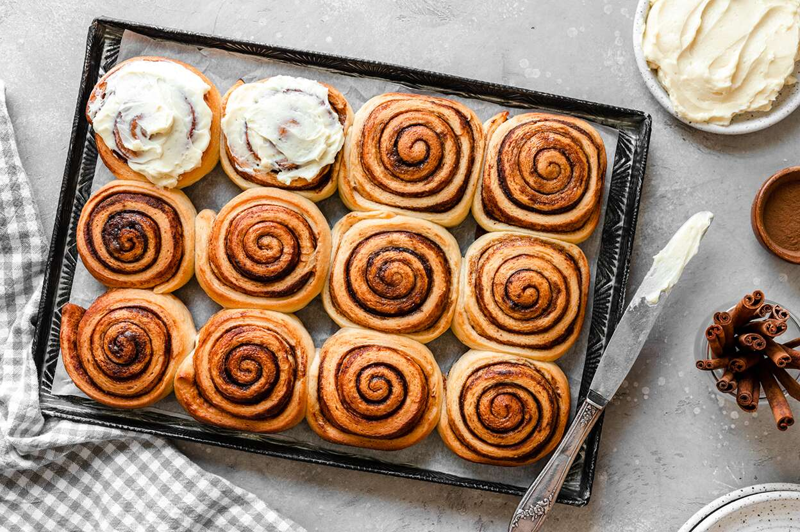

Cinnamon Rolls

Your kitchen is going to smell amazing
You don't have to run to the mall to satisfy your craving for cinnamon rolls — soft and warm from the oven and drizzled
with icing. We'll show you step by step how to make cinnamon rolls from scratch — from making the dough to filling,
forming, baking, and icing — with loads of helpful tips along the way.
Ingredients
- 2 packages active dry yeast
- ⅓ cup white sugar
- 2 cups warm water (45°C)
- 1 tablespoon salt
- 6 ½ cups all-purpose flour
- 2 eggs
- ⅓ cup vegetable oil
- ½ cup white sugar
- 2 teaspoons ground cinnamon
Steps
- In a large mixing bowl, dissolve yeast and 1/3 cup sugar in warm water. Stir in salt and 2 cups flour. Beat mixture for
2 minutes. Beat in eggs and oil. Stir in the remaining flour, ½ cup at a time, beating well after each addition.
- When the dough has pulled together, turn it out onto a lightly floured surface and knead until smooth and elastic, about
5 minutes. Lightly oil a large bowl, place the dough in the bowl and turn to coat with oil. Cover with a damp cloth and
let rise in a warm place until doubled in volume, about 40 minutes. In a small bowl, stir together ½ cup sugar and 2
teaspoons cinnamon; set aside.
- Divide the dough into twelve equal pieces. Take each piece of dough, roll into a log and roll in cinnamon sugar mixture.
Place the knots in a lightly greased 9x13 inch baking pan. Cover the rolls with a damp cloth and let rise until doubled
in volume, about 40 minutes. Meanwhile, preheat oven to 175°C.
- Bake in preheated oven for 30 minutes, until golden.